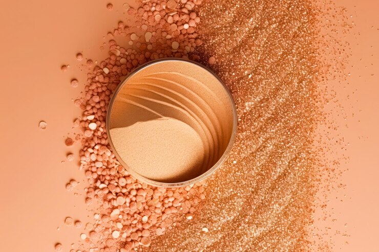

Descripción del producto
Nuestros polvos faciales Velvet Visions son una fórmula avanzada diseñada para proporcionar un acabado suave y natural. Estos polvos están formulados para controlar el brillo, minimizar los poros y proporcionar una apariencia impecable durante todo el día.
Características principales
- Textura liviana: Fórmula que se siente ligera en la piel.
- Control del brillo: Absorbe el exceso de grasa para mantener la piel mate.
- Minimiza los poros: Ayuda a difuminar poros visibles y líneas finas.
- Larga duración: Proporciona una cobertura duradera y resistente.
Tipos de polvos faciales
- Polvos sueltos: Textura ligera ideal para sellar el maquillaje.
- Polvos compactos: Textura prensada para retoques rápidos y cobertura adicional.
- Polvos translúcidos: Casi invisibles en la piel, matifican sin añadir color.